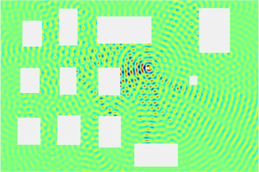

Mobile telephone signal propagation in a city is characterized essentially by obstacles, such as buildings and cars, that attenuates, reflects, refracts
and diffracts
the signal. Should there be a pure line-of-sight from the transmitter to the receiver, the receiver will always receive a constant power from the transmitter conditioned that the transmitter stays at a constant distance from the receiver – this can be the case for example if you are transmitting to a near-by high base-station antenna. If there is no line-of-sight component, the signal strength will vary according to Rayleigh fading as the transmitter and/or the obstacles moves. In the case that there is only a limited line-of-sight element present, the signal strength will follow Rician fading statistics.
I animated a couple of GIFs to help us to perceive what is going on.
The first figure demonstrates how a simple sine signal propagates between buildings. You can observe how the multi-path components sum up to a signal that is amplifying in some locations and degenerating in others. You can look for both Rician conditions (lower right) and Rayleigh conditions (lower left) in the image and see how the signal behaves under those conditions. The figure was obtained by solving the Helmholtz equation by finite element method.
The second figure shows how to aggregate signal power from many mobile transmitters develops in time under Rician fading conditions. The aggregate power can be considered as interference in a receiver. You can see how the high peaks of interference power emerge at random locations. In real life, these kinds of peaks can cause decreased data rates. The figure was obtained by simulating a random walk of points in a realization of the Poisson point process on a plane.
Figure 4:
The white boxes represents buildings, and the little white circle is the transmitter. You can see how reflections will cause the aggregate signal strength to fluctuate by location depending on phases of the incoming reflected waves.
|  |
Figure 5:
Interference power field developing in time. Transmitters are Poisson distributed at random locations and moving to random directions, and the aggregate signal strength after fading is plotted. Red color represents the highest mean power of interference and deep blue represents absence of any interference. There is a line-of-sight component is present – that is, we assume Rician fading. Red occurrences will cause remarkable disturbance in communication as interference from other transmitters gets large. Time can't be considered to be in a human perspective scale here.
 |
References: